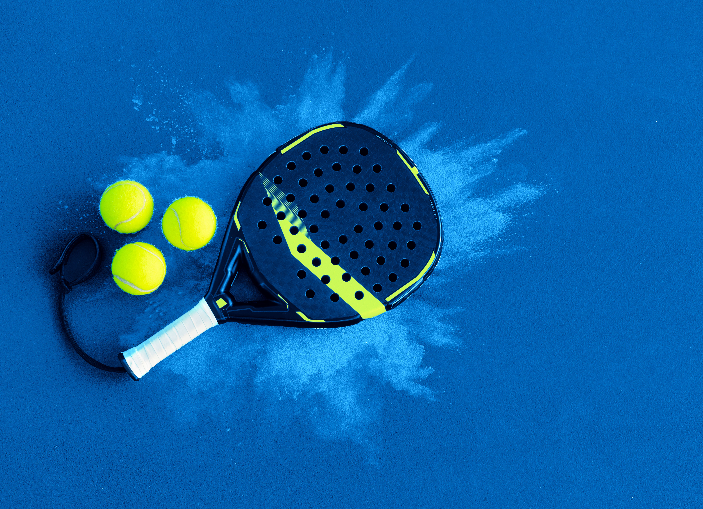
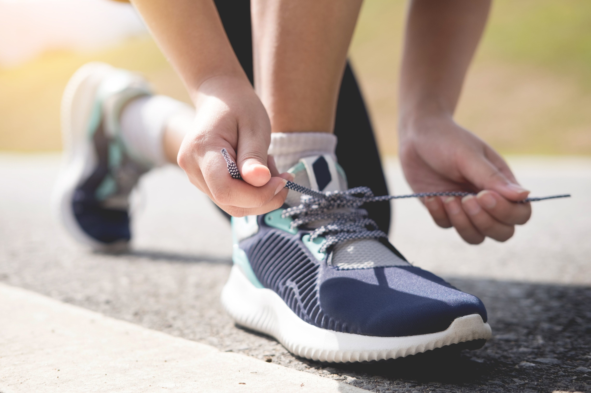

Bandung selalu punya cara unik dalam mengikuti tren gaya hidup — termasuk di dunia olahraga. Setelah tren lari dan gym estetik, kini giliran padel yang naik daun di kalangan anak muda, terutama Gen Z dan profesional muda.
Padel, olahraga gabungan antara tenis dan squash ini, jadi favorit baru karena mudah dimainkan, seru dimainkan berdua, dan (tentu saja) Instagrammable banget. Nggak heran kalau lapangan padel mulai bermunculan di berbagai sudut kota Bandung — lengkap dengan kafe, lounge, dan area hangout yang super kece.
Selain padel, ada juga tempat-tempat olahraga lain yang lagi booming di Bandung: dari running spot dengan udara segar, hingga sport hub multifungsi yang estetik. Nah, ini dia 7 rekomendasi tempat olahraga hits di Bandung buat kamu yang pengin tetap aktif sambil nongkrong bareng teman.
1. The Padel Club Dago - Pionir Padel di Bandung dengan View Keren
Lokasi: Dago Pakar, Bandung, Jam buka: 07.00 - 22.00
Terletak di kawasan Dago yang sejuk, The Padel Club Bandung adalah pelopor lapangan padel di kota ini. Dikelilingi pepohonan rindang dan udara segar khas Dago, tempat ini jadi spot favorit para pecinta olahraga dan konten kreator.
Selain dua lapangan padel berstandar internasional, tempat ini juga punya area lounge, ruang ganti, dan kafe kecil buat ngopi atau makan sehat setelah main. Desainnya modern-minimalis dengan sentuhan tropis — vibe-nya mirip Bali meets Bandung! Highlight: Cocok banget buat double date match atau sesi afterwork sport hangout.
Harga sewa: Mulai Rp250.000/jam (tergantung jam main).
2. Padelindo Bandung - Spot Eksklusif di Tengah Kota
Lokasi: Jl. Cihampelas atas, Jam buka: 08.00 - 23.00
Padelindo adalah jaringan lapangan padel yang kini buka di Bandung setelah sukses di Jakarta dan Bali. Tempat ini dirancang khusus untuk pemain muda yang ingin merasakan atmosfer sporty tapi elegan.
Lapangan indoor-nya punya pencahayaan canggih dan permukaan turf premium yang lembut di kaki. Selain itu, area tunggunya juga super cozy — lengkap dengan musik chill, locker modern, dan spot foto yang keren. Vibe: Urban, modern, dan cocok buat konten #PadelGirl atau #PadelBros.
Harga sewa: Mulai Rp200.000/jam.

3. Sudirman Sport Park - Tempatnya Semua Jenis Olahraga
Lokasi: Jl. Sudirman No. 777, Bandung. Jam buka: 06.00 - 22.00
Kalau kamu tipe yang suka olahraga bareng teman dengan pilihan banyak, Sudirman Sport Park bisa jadi spot favoritmu. Tempat ini bukan cuma punya lapangan padel, tapi juga futsal, tenis, dan area gym terbuka.
Setiap akhir pekan, suasananya ramai banget dengan komunitas-komunitas olahraga — mulai dari morning run group sampai padel community Bandung. Tempat ini juga sering mengadakan mini tournament dan fun match buat pemula yang pengen belajar.
Bonus: Ada smoothie bar dan recovery corner buat stretching dan relaksasi setelah olahraga.
4. Hutan Kota Babakan Siliwangi - Rute Lari Favorit dengan Nuansa Alam

Lokasi: Jl. Tamansari, Bandung. Jam buka: 06.00 - 18.00
Bosan lari di treadmill? Coba lari atau jalan pagi di Babakan Siliwangi (Baksil). Tempat ini bukan hanya ikon hijau Bandung, tapi juga spot olahraga yang digemari komunitas lari dan pejalan kaki.
Rute sepanjang ±2,5 km dikelilingi pepohonan raksasa dan udara lembap khas hutan kota. Banyak Gen Z yang menjadikan Baksil sebagai tempat mental recharge — sambil dengerin musik dan ngopi di Waroeng Ethnic setelahnya.
Vibe : Natural, santai, dan cocok buat kamu yang cari ketenangan setelah seminggu sibuk kerja atau kuliah.
5. Gasibu - Legendaris dan Selalu Ramai
Lokasi: Jl. Diponegoro (Depan Gedung Sate). Jam buka: 05.30 - 10.00 & 16.00 - 19.00
Gasibu sudah jadi the classic running track di Bandung. Setiap pagi atau sore, kamu akan melihat puluhan pelari dari berbagai usia — dari pelari komunitas hingga anak muda yang baru mulai rutinitas sehat.
Kelebihan Gasibu adalah suasananya yang hidup dan lokasinya yang super strategis. Setelah lari, kamu bisa langsung sarapan bubur ayam legendaris di sekitar area atau duduk santai di taman Gedung Sate.
Tip: Kalau mau ambience yang lebih sepi, datang sekitar jam 06.00 pagi.
6. Arena Padel PVJ - Olahraga Sekaligus Hangout
Lokasi: Paris Van Java Mall, Sky Level. Jam buka: 09.00 - 22.00
Kombinasi olahraga dan gaya hidup urban? Inilah jawabannya. Arena Padel PVJ menghadirkan konsep sport & lifestyle space yang kekinian di tengah pusat perbelanjaan paling hits Bandung.
Bayangkan: kamu main padel dengan latar langit Bandung sore hari, lalu lanjut makan sehat di resto rooftop PVJ.
Tempat ini dirancang dengan konsep semi-outdoor, pencahayaan premium, dan area lounge terbuka — sangat content-worthy.
Highlight: Perfect buat after-office padel session bareng teman sekantor.
Harga Sewa: Sekitar Rp300.000/jam (bisa split 4 orang).
7. Oray Tapa Trail - Surga Pelari & Pencinta Alam
Lokasi: Cimenyan, Bandung Timur. Jam buka: 05.00 - 17.00
Untuk kamu yang lebih suka olahraga adventure, Oray Tapa Trail adalah destinasi wajib. Rute trail sejauh 5-7 km ini menantang tapi menyenangkan — melewati hutan pinus, jalan setapak, dan pemandangan kota Bandung dari ketinggian.
Banyak komunitas pelari Bandung yang menjadikan Oray Tapa sebagai lokasi weekend run. Selain udara segar, pemandangan sunrise di puncaknya benar-benar worth it.
Vibe: Cocok buat kamu yang cari konten nature running atau sekadar mau “kabur” dari hiruk-pikuk kota.
Bonus: Rekomendasi Outfit & Gear Buat Olahraga di Bandung
Kalau kamu mau tampil keren sekaligus nyaman di lapangan padel atau saat lari, ini daftar perlengkapan wajib versi Gen Z Bandung:
- 1. Sneakers ringan & stylish: On Running Cloudflow, Nike Pegasus 41, atau Adidas Adizero.
- 2. Outfit padel: crop top, short stretch, dan visor — breathable tapi tetap fashionable.
- 3. Smartwatch & tracker: Garmin Forerunner, Apple Watch SE.
- 4. Earphone tahan keringat: Shokz OpenRun atau JBL Reflect Flow.
- 5. Hydration pack mini: buat kamu yang suka trail run.
- 6. Sunscreen & topi: karena Bandung bisa panas banget di siang hari.
Style Insight: Gen Z Bandung cenderung memilih outfit dengan warna netral, earthy tone, dan bahan quick-dry yang fungsional tapi tetap estetik.
Bandung, Kota yang Aktif dan Penuh Energi
Olahraga di Bandung kini bukan cuma soal keringat, tapi juga gaya hidup, komunitas, dan positive vibe. Dari lapangan padel modern sampai rute lari hijau, semuanya menawarkan pengalaman yang bikin kamu makin semangat bergerak.
Kota ini punya energi unik — seimbang antara alam, kreativitas, dan kesehatan. Jadi, mau kamu pilih main padel di Dago atau lari pagi di Baksil, yang penting satu: tetap aktif, tetap seru, dan nikmati prosesnya.